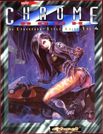

|  | Fiche technique |
| Supplément pour le jeu de rôles Cyberpunk 2020, édité par R. Talsorian Games (1996) | |
| Langue | Français |
| Thème | Grande braderie de printemps |
| Qualité du background | 3 / 5 |
| Qualité des scénarii | - |
| Qualité des règles | 3 / 5 |
| Qualité des illustrations | 3 / 5 |
| Qualité de l'écriture | 3 / 5 |
Tous les deux ans, un Chromebook, telle est la loi. Voici donc le dernier en date de la série, bien plus maigre que ses prédécesseurs. Quoi de neuf ? Des implants, encore et toujours, encore que cette fois-ci la part belle est faite à la génétique et aux nanoïdes. Viennent ensuite les véhicules, toujours présents. Comme d'habitude tous ne sont pas illustrés, ce qui a le don de m'énerver profondément. Puis, une nouvelle rubrique de matériel pour nos amis les netrunners, et le sempiternel catalogue d'équipement. La nouveauté de ce supplément (car il en faut, sinon on ne l'achèterait pas), c'est le chapitre sur la mode. Bien illustré, ce passage est bien sympathique pour habiller son monde : plus besoin d'aller piller les revues de musiques alternatives. En conclusion, mon impression à la lecture du Chromebook 3 se précise : l'imagination s'est tarie, et beaucoup de choses ne sont que des reprises, et un seul chapitre (la mode) est réellement novateur. C'est bien dommage.
{kind=link}